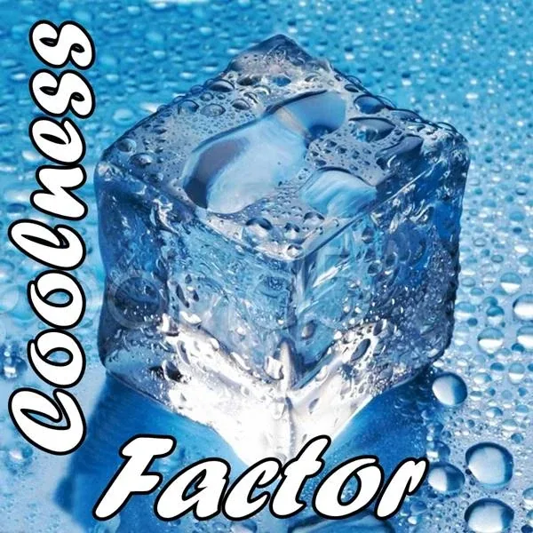

**Coolness **
Factor
- …
**Coolness **
Factor
- …

- Juicy and Cool- Whether you know it or not, this is you: - Juicy and Cool.- In certain circumstances, from specific viewpoints, you are the coolest thing there is. - Let's find those circumstances and viewpoints together. - Just like it is easier to spot other people's deficiencies than it is to spot your own, - you will use the creative clarity of your - Possibility Teamto find each other's Coolness Factor! - It is up to you to invent who you are.- - Clinton Callahan - Who you are is what you are causing in the people around you. - Your coolness factor emerges through the experience of the distinction between you and your - Box. By experiencing this distinction, you discover that it is up to you to invent who you are.- It is up to you to invent the 'coolness' that is needed in each moment. - This creative process gives birth to your Coolness Factor. - Finding Each Other's Coolness Factor- ### Passion - # Examples- You cannot discover your coolness factor within your good girl box. You cannot enter the archetypal domain of your own non-material value within the ordinary constraints of your box. Entering archetypal realms is teamwork. - Making the shift from a good girl or good boy adaptive to a culture which has no interest in empowering your radiant beings to shine, into a dignified human being capable of sourcing Archiarchy wherever you go, requires (cou)rage, practice and fierceness. - Something other than this is possible right now simply because you are in the space. - Will you dare to actually take this stand? - But don't fool yourself! - You have so far been cleverly hiding your archetypal Coolnessfactor for all your life. You have allowed your Gremlin to secretly support a culture of abuse and numbness either by adapting to it or by fighting it (Yes, fighting a thing equally gives the thing you are fighting against power, just as if you were waving the flag of support.) - Your transformed Gremlin is one of your greatest allies in becoming consciously arrogant enough to take the unquavering stand of your archetypal Coolnessfactor in action. - Here are some examples of arrogant dignified women speaking about their archetypal Coolnessfactor as part of their Good Girl Buster Training. - Experiments- Bask in the ecstasy of creation.- These are team experiments and they build on each other. - They are like a cascade that flows from the smaller to the larger. In that case from the individual in a team to the whole team. - It is a Coolness-Booster-Cascade. - THE SPACE IS LIKE THIS BECAUSE YOU ARE LIKE THIS / PLENUM- MATRIX CODE: - COOLFACT.01- The whole team is together in one space.
The experiment goes like this: Tell another person who is now in the space with you what quality is in the space because that person is in the here.
A statement can begin with the words, "Because you are here today, the space is ......."
There is no order to how it is spoken.- There is no commentary, feedback or coaching.
Time: 15 minutes.- After completing this experiment, please register Matrix Code - COOLFACT.01- StartOver.xyz. This Experiment is worth 1 Matrix Point. - THE SPACE IS LIKE THIS BECAUSE YOU ARE LIKE THIS / BREAKOUT ROOMS- MATRIX CODE: - COOLFACT.02- The group splits into groups of two and goes into breakout rooms. - Person A starts, scans person B and talks for 5 minutes about what qualities are in the space because person B is in the space. - Person B maintains eye contact, doesn't write in, doesn't comment, and doesn't respond. - After 5 minutes, role change. - After completing this experiment, please register Matrix Code - COOLFACT.02- StartOver.xyz. This Experiment is worth 1 Matrix Point.
- THE SPACE IS LIKE THIS BECAUSE YOU ARE LIKE THIS / PLENUM- MATRIX CODE: - COOLFACT.01- The whole team is together in one space.
The experiment goes like this: Tell another person who is now in the space with you what quality is in the space because that person is in the here.
A statement can begin with the words, "Because you are here today, the space is ......."
There is no order to how it is spoken.- There is no commentary, feedback or coaching.
Time: 15 minutes.- After completing this experiment, please register Matrix Code - COOLFACT.01- StartOver.xyz. This Experiment is worth 1 Matrix Point. - THE SPACE IS LIKE THIS BECAUSE YOU ARE LIKE THIS / BREAKOUT ROOMS- MATRIX CODE: - COOLFACT.02- The group splits into groups of two and goes into breakout rooms. - Person A starts, scans person B and talks for 5 minutes about what qualities are in the space because person B is in the space. - Person B maintains eye contact, doesn't write in, doesn't comment, and doesn't respond. - After 5 minutes, role change. - After completing this experiment, please register Matrix Code - COOLFACT.02- StartOver.xyz. This Experiment is worth 1 Matrix Point. - I AM LIKE THIS BECAUSE YOU ARE LIKE THIS / PLENUM- MATRIX CODE: - COOLFACT.03- The whole team is together in one space..
The experiment goes like this:- Tell another person who is now in the space with you how you yourself are now because that person brings those qualities to the space.
A statement can begin with the words, "Because you are here today, I am...."- As - feelingsarise, they can be named.
There is no order to how spoken.- There is no commentary, feedback or coaching. - After completing this experiment, please register Matrix Code - COOLFACT.03- StartOver.xyz. This Experiment is worth 1 Matrix Point.
- I AM LIKE THIS BECAUSE YOU ARE LIKE THIS / PLENUM- MATRIX CODE: - COOLFACT.03- The whole team is together in one space..
The experiment goes like this:- Tell another person who is now in the space with you how you yourself are now because that person brings those qualities to the space.
A statement can begin with the words, "Because you are here today, I am...."- As - feelingsarise, they can be named.
There is no order to how spoken.- There is no commentary, feedback or coaching. - After completing this experiment, please register Matrix Code - COOLFACT.03- StartOver.xyz. This Experiment is worth 1 Matrix Point. - I AM LIKE THIS BECAUSE YOU ARE LIKE THIS / BREAKOUT ROOMS- MATRIX CODE: - COOLFACT.04- The group splits into groups of two and goes into breakout rooms. - Person A starts, scans person B and talks for 5 minutes about how they themselves are now because person B brings those qualities to the space. - Person B keeps eye contact, doesn't take notes, doesn't comment, and doesn't respond. - After 5 minutes, role change. - After completing this experiment, please register Matrix Code - COOLFACT.04- StartOver.xyz. This Experiment is worth 1 Matrix Point.
- I AM LIKE THIS BECAUSE YOU ARE LIKE THIS / BREAKOUT ROOMS- MATRIX CODE: - COOLFACT.04- The group splits into groups of two and goes into breakout rooms. - Person A starts, scans person B and talks for 5 minutes about how they themselves are now because person B brings those qualities to the space. - Person B keeps eye contact, doesn't take notes, doesn't comment, and doesn't respond. - After 5 minutes, role change. - After completing this experiment, please register Matrix Code - COOLFACT.04- StartOver.xyz. This Experiment is worth 1 Matrix Point. - COOLNESS BOOSTER- MATRIX CODE: - COOLFACT.05- This is a variation of - possibilitytalk.- One person starts and is person A. The others scan the person and give them ways to boost their coolness factor. - The group tells Person A what her coolness factors are and how she can significantly increase them, bring them forward, and boost them. - Person A can take notes.
Duration: 6 minutes per person.- After completing this experiment, please register Matrix Code - COOLFACT.05- StartOver.xyz. This Experiment is worth 1 Matrix Point.
- COOLNESS BOOSTER- MATRIX CODE: - COOLFACT.05- This is a variation of - possibilitytalk.- One person starts and is person A. The others scan the person and give them ways to boost their coolness factor. - The group tells Person A what her coolness factors are and how she can significantly increase them, bring them forward, and boost them. - Person A can take notes.
Duration: 6 minutes per person.- After completing this experiment, please register Matrix Code - COOLFACT.05- StartOver.xyz. This Experiment is worth 1 Matrix Point. - WHO AM I? / PLENUM- MATRIX CODE: - COOLFACT.06- One person starts and is person A. - The others scan the person and then name who they are. - So not what she does or who she is in modern culture, but who she is from her actual purpose. Which name describes what their qualities are and what corresponds to what they do. - Duration: 6 minutes per person. - After completing this experiment, please register Matrix Code - COOLFACT.06- StartOver.xyz. This Experiment is worth 1 Matrix Point. - COOLNESS FACTOR OF TEAMS / PLENUM- MATRIX CODE: - COOLFACT.07- (Everyone is asked to bring a cap or hat).
Suppose a team could also be cool. Suppose a team could bring qualities to a space where other teams are.- The following - experimentis designed to explore that.
The- spaceholderforms small teams from the large team.- For example, if the total team is 12 people, the Spaceholder can form 4 teams of 3 people each. It does not matter how this is done.
Team A starts. To make it clear to everyone who belongs to Team A, everyone from Team A puts on their cap. Everyone else who is not on Team A now scans Team A and starts sentences by saying, "Team A, because you are in the space today, the space/ has this quality / are the following- Bright Principlesin the space / are the following Shadow Principles in the space."- It is important that the whole team is always addressed, never a single person from that team.
Members of Team A keep in touch, do not write with no one commenting.
Time: 8 minutes.- When time is up, Team A participants remove their caps. - It continues with team B. - After completing this experiment, please register Matrix Code - COOLFACT.07- StartOver.xyz. This Experiment is worth 1 Matrix Point. - BATTLE CRY- MATRIX CODE: - COOLFACT.08- The teams from the previous - experimentgo into breakout rooms.- The experiment is to find a battle cry that is like the team is. - There is exactly one battle cry that carries the qualities of this team and this battle cry is to be found. - I deliberately write "find," not "create."
When the breakout time is over, all teams come together and present their battle cries one by one.- After completing this experiment, please register Matrix Code - COOLFACT.08- StartOver.xyz. This Experiment is worth 1 Matrix Point. - COOL TEAM BATTLE CRY- MATRIX CODE: - COOLFACT.09- The whole team finds its battle cry. - This battle cry is unique and it already exists, it is already in the space because the team is in the space. - After completing this experiment, please register Matrix Code - COOLFACT.09- StartOver.xyz. This Experiment is worth 1 Matrix Point. - CASCADE COMPLETION- MATRIX CODE: - COOLFACT.10- When you have gone through these experiments together with your team and become a cool team, the Coolness - Booster Cascadeis not over yet.- You can now invite other teams and hold space for them as they go through the experiments and get completely different and new - possibilitiesand also become a cool team.- There are quite a few teams around the world that are stuck in some gameworld, going around in circles waiting for you. The easiest way I can think of first is to invite another Possibilitator team to join you. - After completing this experiment, please register Matrix Code - COOLFACT.10- StartOver.xyz. This Experiment is worth 3 Matrix Points.
- NOTE:This website is a- Bubble in the Bubble Mapof the free-to-play massively-multiplayeronline-and-offline thoughtware-upgrade matrix-building personal-transformation real-life adventure-game called- StartOver.xyz. It is a- doorwayto- experimentsthat- upgrade your thoughtwareso you can relocate your- point of originand- createmore- possibility. Your- knowledgeis what youthink about. Your- thoughtwareis what you useto think with. When you- change your thoughtware,you go through a- liquid stateas your mind- reorganizesitself. Liquid states can bring up transformational- feelingsand- emotions. By- upgrading your thoughtwareyou- build matrixto hold more- consciousness (archived — not captured)and leave behind a- low dramalife of- reactivity. No one can upgrade yourthoughtware for you. More interestingly, no one can stop you from upgrading your thoughtware. Our theory is that when we- collectively build1,000,000 new Matrix Points we will change the morphogenetic field of the human race for the better. Please choose- responsiblyto read this website. Reading thiswhole website is worth 1 Matrix Point. Doing any of the experiments earns you additional Matrix Points. Please use Matrix Code- COOLFACT.00to log yourMatrix Point for reading this website in your free account at- StartOver.xyz. Thank you for playing full out!
- WHO AM I? / PLENUM- MATRIX CODE: - COOLFACT.06- One person starts and is person A. - The others scan the person and then name who they are. - So not what she does or who she is in modern culture, but who she is from her actual purpose. Which name describes what their qualities are and what corresponds to what they do. - Duration: 6 minutes per person. - After completing this experiment, please register Matrix Code - COOLFACT.06- StartOver.xyz. This Experiment is worth 1 Matrix Point. - COOLNESS FACTOR OF TEAMS / PLENUM- MATRIX CODE: - COOLFACT.07- (Everyone is asked to bring a cap or hat).
Suppose a team could also be cool. Suppose a team could bring qualities to a space where other teams are.- The following - experimentis designed to explore that.
The- spaceholderforms small teams from the large team.- For example, if the total team is 12 people, the Spaceholder can form 4 teams of 3 people each. It does not matter how this is done.
Team A starts. To make it clear to everyone who belongs to Team A, everyone from Team A puts on their cap. Everyone else who is not on Team A now scans Team A and starts sentences by saying, "Team A, because you are in the space today, the space/ has this quality / are the following- Bright Principlesin the space / are the following Shadow Principles in the space."- It is important that the whole team is always addressed, never a single person from that team.
Members of Team A keep in touch, do not write with no one commenting.
Time: 8 minutes.- When time is up, Team A participants remove their caps. - It continues with team B. - After completing this experiment, please register Matrix Code - COOLFACT.07- StartOver.xyz. This Experiment is worth 1 Matrix Point. - BATTLE CRY- MATRIX CODE: - COOLFACT.08- The teams from the previous - experimentgo into breakout rooms.- The experiment is to find a battle cry that is like the team is. - There is exactly one battle cry that carries the qualities of this team and this battle cry is to be found. - I deliberately write "find," not "create."
When the breakout time is over, all teams come together and present their battle cries one by one.- After completing this experiment, please register Matrix Code - COOLFACT.08- StartOver.xyz. This Experiment is worth 1 Matrix Point. - COOL TEAM BATTLE CRY- MATRIX CODE: - COOLFACT.09- The whole team finds its battle cry. - This battle cry is unique and it already exists, it is already in the space because the team is in the space. - After completing this experiment, please register Matrix Code - COOLFACT.09- StartOver.xyz. This Experiment is worth 1 Matrix Point. - CASCADE COMPLETION- MATRIX CODE: - COOLFACT.10- When you have gone through these experiments together with your team and become a cool team, the Coolness - Booster Cascadeis not over yet.- You can now invite other teams and hold space for them as they go through the experiments and get completely different and new - possibilitiesand also become a cool team.- There are quite a few teams around the world that are stuck in some gameworld, going around in circles waiting for you. The easiest way I can think of first is to invite another Possibilitator team to join you. - After completing this experiment, please register Matrix Code - COOLFACT.10- StartOver.xyz. This Experiment is worth 3 Matrix Points.
- NOTE:This website is a- Bubble in the Bubble Mapof the free-to-play massively-multiplayeronline-and-offline thoughtware-upgrade matrix-building personal-transformation real-life adventure-game called- StartOver.xyz. It is a- doorwayto- experimentsthat- upgrade your thoughtwareso you can relocate your- point of originand- createmore- possibility. Your- knowledgeis what youthink about. Your- thoughtwareis what you useto think with. When you- change your thoughtware,you go through a- liquid stateas your mind- reorganizesitself. Liquid states can bring up transformational- feelingsand- emotions. By- upgrading your thoughtwareyou- build matrixto hold more- consciousness (archived — not captured)and leave behind a- low dramalife of- reactivity. No one can upgrade yourthoughtware for you. More interestingly, no one can stop you from upgrading your thoughtware. Our theory is that when we- collectively build1,000,000 new Matrix Points we will change the morphogenetic field of the human race for the better. Please choose- responsiblyto read this website. Reading thiswhole website is worth 1 Matrix Point. Doing any of the experiments earns you additional Matrix Points. Please use Matrix Code- COOLFACT.00to log yourMatrix Point for reading this website in your free account at- StartOver.xyz. Thank you for playing full out!